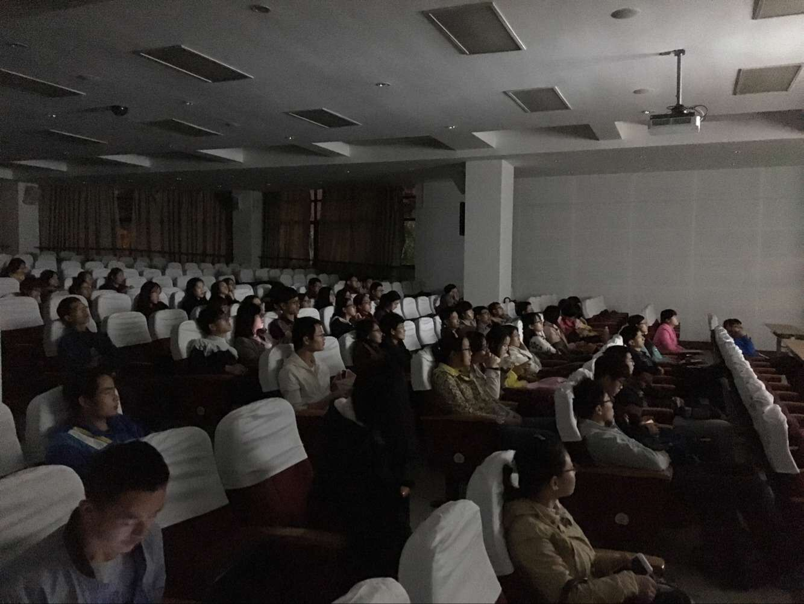
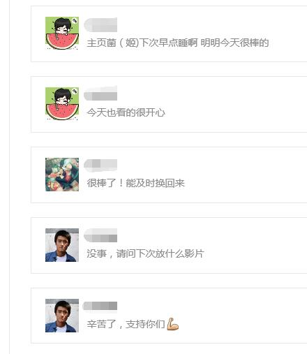
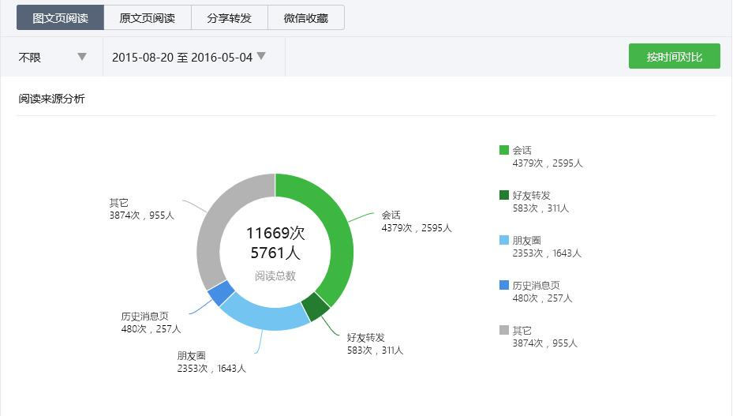
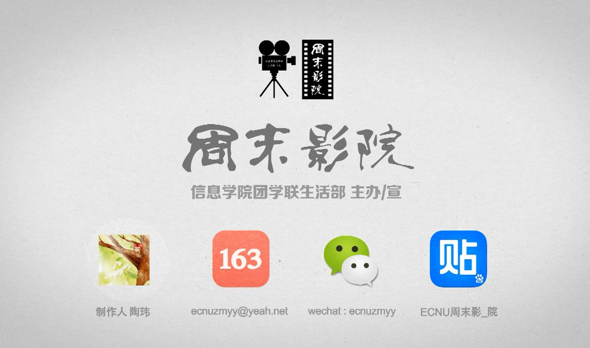

周末影院的这一年，
也几乎是我大二的一年。
作为过去一年周末影院活动的负责人，我要退休了。
坐在观众席的你，想知道每一次活动背后的事吗。
也许你会觉得，周末影院不过是放一场电影，简单，粗糙，没技术含量。
诚然，它不像新年晚会这类活动一样需要大量人力物力。
但这一学年的周末影院如此这般地办下来，我觉得还挺不容易的。
宣传短片里面写着“营造舒适观影体验”，它决不是干瘪的口号，它需要落实，落实在视频文件清晰度的高质，落实在教室的铃声开关的关闭，落实在学校电脑的杀毒软件要谨防弹窗，落实在之前准备的备用电脑的调试……
还记得前不久的《猫鼠游戏》吗？
电影刚播放时，卡得要命，还意外地放出了中文的配音，这个时候本该用Plan B的，即：用主办那次活动的干事的电脑，可惜的是，她的电脑恰好没有VGA接口，而当天的调试过程因为另一个组织的占用耽误而省略……这一切都是实实在在的理由，抑或借口。按平常来说，这些也都在意料之中无可厚非，而且，我会准备Plan C——带上我自己的电脑。而那次，是我办了11场周末影院以来，第一次没带。于是便有了我急忙飞回寝室再飞奔回教室换电脑的情景，后来我听说，有人中途离场，他对我们的工作人员说了句：“建议下次放英文配音的”，他微笑，我苦笑——其实我们一直都要求下载英文配音，但播放器在那次切换了配音。同时我深知，那次活动事故时，来了150多人的观众。

这一切看起来偶然，巧合，但举办次数的增加使得一切微小的可能都变得可以发生。
所以，有时候，周末影院背后的故事不亚于你们所看电影的戏剧性。
很欣慰那天发完致歉信的深夜，有热心观众留下安慰的话。

当时，我躺在床上，温暖地笑了。
这个微信公众号在去年七月申请，八月底正式投入使用，不到一年的时间，累计阅读量破万，关注人数超过560，从最初的寥寥无几，到每一次周末影院都能带来几十人的新增关注，从花哨而丑陋的微信排版，到现在有了固定风格的微信推送。在此期间，我们开通了原创，留言和赞赏功能——这个微信号的成长我深感欣慰，因为过去每一篇图文推送都是我点击的“群发”，因为过去日日夜夜坐在后台的我听过吐槽聊过天，时常挂念着阅读人数和关注人数的变化，每周我会调整一次自定义菜单，那一切一切都是我记在心底忘不掉的记忆。

单单一个团队办好周末影院是不行的，我会退休，部门也要换届。这一学年的周末影院既是大一干事们的尝试，也为之后周末影院的稳步发展奠定基础。有时候，我放开手让他们去做的时候，心里不放心，我们部长说我那心情像是“女儿要出嫁了”。
记得去年开学，让干事做周末影院海报的时候，他们都是新手，常常我挑剔来挑剔去，来来回回要改好几遭，有人烦躁有人耐心，还有人悲伤……门票亦然，微信稿也是如此。直到上个月17号，我看到干事们互相修改的海报成品，我突然觉得没什么好修改的了，我很欣慰——他们终于可以独立完成了。干事在讨论组里说，“想当年-，-忆往昔 我和陶大大挑灯夜战的那个门票”，那一刻，我知道，我耐下性子的批评意见不是无用的，我曾经一次次的努力知道是有意义的，在交流与争辩中，每个人的技能都得到了提升——那感觉就像，你载了一年的植物，给它阳光，给它雨露，给它耕土，有一天，他终于开花了。

我还记得周末影院曾在放映开始时熄过屏（关错了电源），也记得《女间谍》放完之后，有好几个人久久不愿离去，在等着片尾的彩蛋，我记得《彗星来的那一夜》把我旁边的两位同学看睡着了，我也记得《七号房的礼物》让一些人泪眼朦胧。我记得我刷朋友圈，刷帖吧时看到有人提到周末影院，我记得每一个雨天撑着伞赶来看周末影院的脸庞，我记得那个说你们能不能调到周六晚上他要上辅修的孩子，我记得好几个和我吐槽中北没有周末影院的人，我记得14年末闵行的大活还不怎么放电影，我记得当时还没有物美和时代影城，我记得那时候图书馆的影视欣赏室还不叫天堂电影院……
这么一想，周末影院还真是陪伴我度过所有在闵行的大学生活呢。

按照学校的院系调整，信息学院的计算机系和原软件学院合并，我这个计算机系大二的很可能下学期就搬去中北，到了那里，有环球港，有3D电影院……但是那又怎样呢，我会对着微信窗口吐槽中北没有免费电影院吗？我要做40min的校车去看一看熟悉的三教109和四教106吗？
闵大荒这里才有我在大学所热爱的一切啊。
引用几句我刚进大学写下的话作为结束吧
我知道我应该活在当下，
但是记忆太深，
曾经用情太深。
我也只有如此般用尽力气与心思才能换取那一份难忘吧。”
近一年做的视频献给最爱的生活部♥：
招新视频
宣传视频1
宣传视频2
PS：如需引用，还望注明出处。